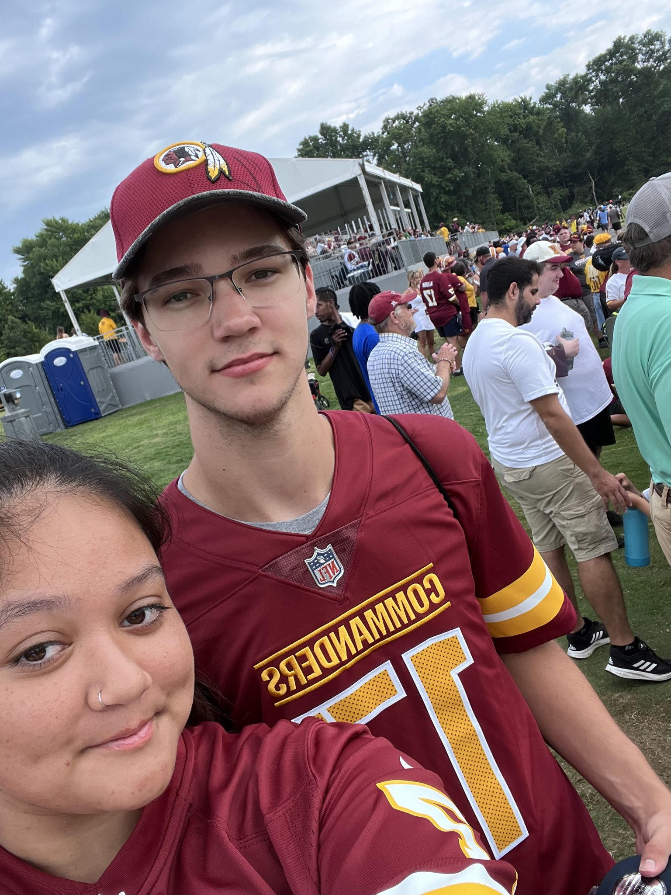

About Me
Jacob Grimes
My name is Jacob Grimes, I am a sophomore Computer Science student at James Madison University in Harrisonburg, VA. from Northern Virginia. My favorite team is the Washington Redskins (Commanders), and my favorite player is Terry McLaurin.
In my free time, I enjoy playing guitar, playing videogames, going to concerts with my girlfriend, watching sports, and hanging out with friends. Back home, I used to play acoustic guitar for my church Sunday mornings and for the youth group Wednesday nights, and I hope to do that again when I am home for the summer.